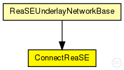
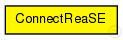

This documentation is released under the Creative Commons license
This documentation is released under the Creative Commons licensethis module connects overlay terminals to ReaSE edge routers
The following diagram shows usage relationships between types. Unresolved types are missing from the diagram. Click here to see the full picture.
The following diagram shows inheritance relationships for this type. Unresolved types are missing from the diagram. Click here to see the full picture.
If a module type shows up more than once, that means it has been defined in more than one NED file.
| ReaSEUnderlayNetworkBase (compound module) |
The InetUnderlay ned-file See also: ReaSEUnderlayConfigurator |
| Name | Type | Default value | Description |
|---|---|---|---|
| channelTypes | string |
list of (tx) channel types (from common/channels.ned) |
|
| channelTypesRx | string |
list of (rx) channel types (from common/channels.ned) |
|
| channelDiversity | double | 0 |
percentage a channel delay can differ from the channel type value |
| Name | Value | Description |
|---|---|---|
| display | i=block/table |
// // this module connects overlay terminals to ReaSE edge routers // simple ConnectReaSE { parameters: @display("i=block/table"); string channelTypes; // list of (tx) channel types (from common/channels.ned) string channelTypesRx; // list of (rx) channel types (from common/channels.ned) double channelDiversity = default(0); // percentage a channel delay can differ from the channel type value }
This documentation is released under the Creative Commons license